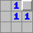

Mine Sweeper - How to Play
The goal of Mine Sweeper is to find all the mines without blowing up.
-
You find mines by "stepping" on a square.
-
If it is safe, it will clear and reveal how many of the adjacent 9 squares contain mines
 -
If it is a mine, you lose.
-
If it is safe, it will clear and reveal how many of the adjacent 9 squares contain mines
- You can mark a squares that you think have a mine with a flag.
- The first square you click on is always safe.
- If a square has no mines in its 9 adjacent squares, it will appear blank and all adjacent squares will be revealed.